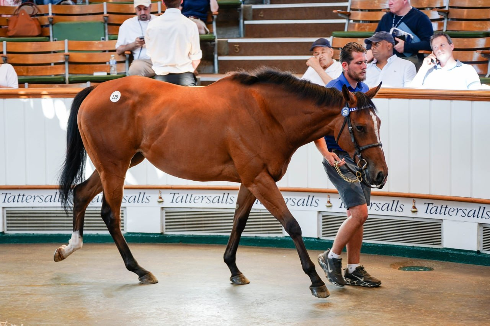

Renaissance Lady, hija de Reem Three, cierra en 500.000 guineas la segunda jornada del Tattersalls July Sale
La subasta Tattersalls July Sale cerró su segunda jornada con Renaissance Lady, hija de la matrona Reem Three, adjudicada por Ace Bloodstock en 500.000 guineas, marca que se convierte en la venta más alta del segundo día en Newmarket. La operación coloca a Ace Bloodstock en el foco del mercado internacional de…

Cesión editorial (Telegram)
La subasta Tattersalls July Sale cerró su segunda jornada con Renaissance Lady, hija de la matrona Reem Three, adjudicada por Ace Bloodstock en 500.000 guineas, marca que se convierte en la venta más alta del segundo día en Newmarket. La operación coloca a Ace Bloodstock en el foco del mercado internacional de yeguas de cría joven.
La sesión encumbró también a Aegina, una tresañera hija de Havana Grey con actuación colocada en pruebas de stakes, adjudicada por Elwick Stud en 240.000 guineas. La firma británica se hace con una esprínter con proyección inmediata a categoría negra y potencial de reproductora, en línea con la política de fondo mercantil que la subasta reflejó a lo largo del día.
El julio de Newmarket sigue siendo la referencia europea del segmento medio-alto de yeguas y tresañeras entre carreras. La primera jornada había situado el listón alto y la segunda confirmó la tendencia con Renaissance Lady como buque insignia. Tattersalls afronta ahora la tercera y última jornada del ciclo con la vista puesta en si algún lote alcanza el techo de las 600.000 guineas.
Para el mercado europeo, la señal es doble. Por un lado, la salud del segmento de yeguas rurales de cría de calidad se mantiene con compradores dispuestos a exceder las 400.000 guineas por linajes probados. Por otro, el interés por esprínteres jóvenes con recorrido en pista confirma la tracción de la sangre Havana Grey en Reino Unido tras su éxito reciente en el catálogo de sementales de Whitsbury Manor Stud.
Vídeo recomendado
En YouTube no aparece embed público oficial del knock-down de Renaissance Lady o Aegina en Tattersalls July Sale 2026. Se omite el bloque de vídeo conforme a la regla anti-invención.
— Redacción de Galope al Día